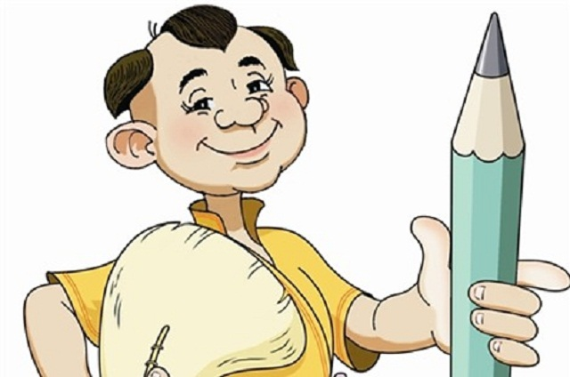

Quan rẻ thối

Có một ông quan huyện thấy cần phải đi hành hạt để xem dân tình trong huyện đối với mình ra sao. Chọn ngày
lành
tháng tốt quan lên đường.
Ðể cho oai, quan bắt dân phi phải khiêng mình bằng một chiếc võng đòn con thật đẹp. Lại thêm một chiếc lọng
xanh
do một cậu lính vác cho ra vẻ.
Ngày ấy là phiên chợ huyện. Quan muốn dạo chợ. Sắp đến đầu chợ, quan nghe
trong một nhà bên phố, tiếng chồng bảo vợ:
– Bà mày hôm nay không mua thịt chớ thịt rẻ lắm. Một quan phải hai người gánh. Quan thịt rẻ thối như thế
không
biết đường mà mua.
Nói xong anh ta còn đay lại: “Quan rẻ thối”.
Quan huyện biết lão này chửi xỏ mình, tức quá nhưng không biết trị làm sao được. Thấy lính hầu và dân phu có
vẻ
đắc ý cười tủm, quan tức quát chạy thẳng, không dạo chợ nữa.